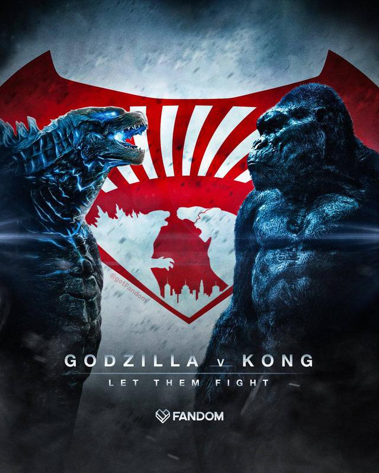
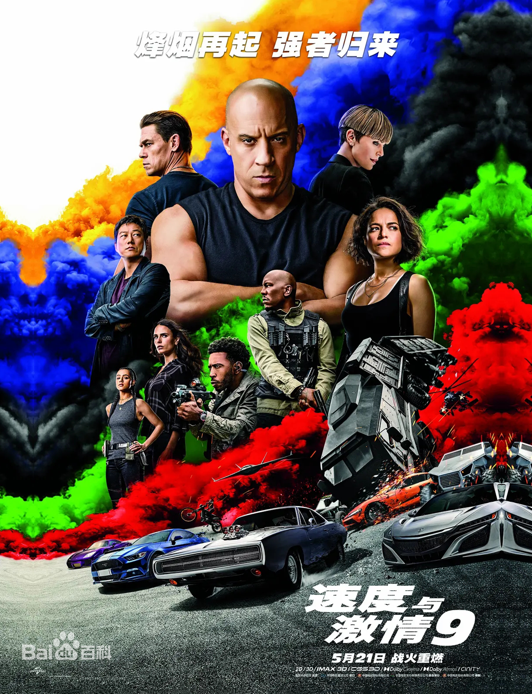
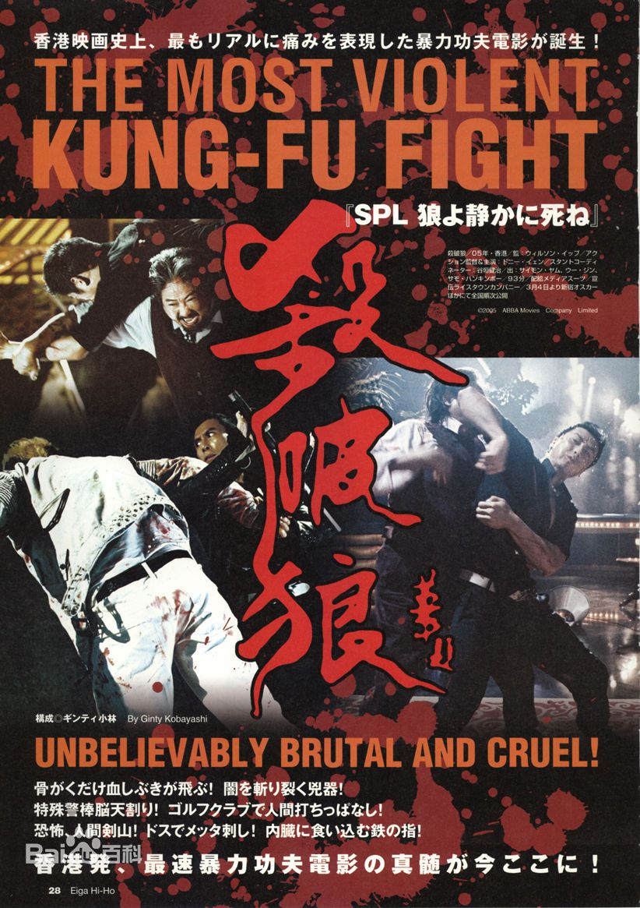

- 
哥斯拉大战金刚
《哥斯拉大战金刚》是由美国传奇影业公司出品，亚当·温佳德执导的动作科幻片，于2021于3月26日在中国内地上映。该片讲述了人类计划将所有巨兽从地球上抹去，而传说中哥斯拉和金刚两个王者被设计进行了对决，最终两大巨兽联手破坏人类计划的故事。截至4月27日21:38:24，电影《哥斯拉大战金刚》中国内 ...
- 
速度与激情9
《速度与激情9》是《速度与激情》系列电影的第九部。是由美国环球影业发行，林诣彬执导 [1] ，范·迪塞尔、米歇尔·罗德里格兹、泰瑞斯·吉布森等主演的动作片，该片于2021年5月21日在中国内地上映，2021年6月25日在北美上映。
该片讲述了本已隐退的多米尼克和莱蒂在好友的邀请下重新出山，和失散多年的兄弟相认，并转战空间站的故事。 -
叶问4：完结篇
电影讲述了远赴美国开馆的李小龙因授武予洋人得罪当地人马，叶问现身美国唐人街，引导小龙以武震慑整个唐人街，以德令华洋各路折服的故事
- 
杀破狼
该片主要讲述了即将退休的督查陈国忠、黑社会老大王宝、新任督查马军之间的生死搏斗。影片于2005年11月上映，在香港播映3天票房即达216万港币